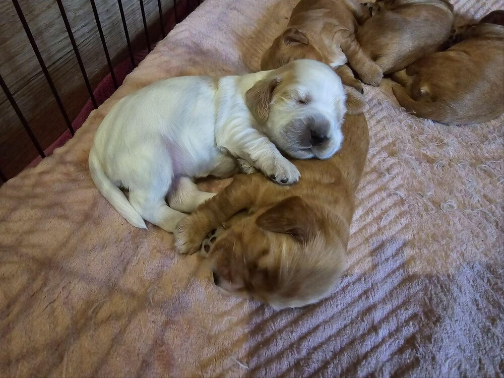
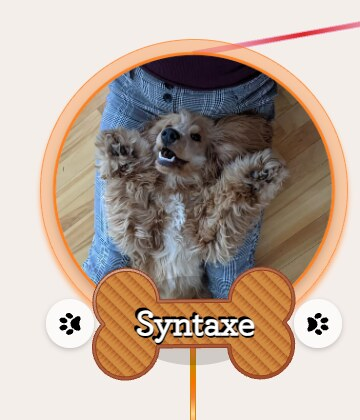

Acte 1
Comment je me suis retrouve a coder un atelier de SVG
Une histoire de chien, de site web et de variables CSS
Une famille de cabots → 5 chiots plus tard
Mon chien Syn (Syntaxe pour les intimes) etait sur le point d'etre papa. Naturellement, j'ai voulu faire un petit site pour presenter la petite famille et celebrer l'occasion.

J'ai donc facture une journee de
travail a Syn. C'etait le moment parfait pour faire un peu de veille techno, tester quelques
outils et garder un souvenir de cet episode.
Defi : un dogtag par chien
Un de mes objectifs : afficher chaque chien avec sa propre medaille personnalisee. Onze chiens, onze medailles, toutes coherentes mais toutes uniques.
Premier reflexe : demander a une IA de generer les images. Probleme :
La solution : un SVG
Apres plusieurs iterations, que nous verrons par la suite, la solution est rapidement devenue claire : utiliser un SVG. Meme template, trois chiens differents (le premier, c'est Syn, enfin, Syntaxe).
Syn(taxe), le papa
Albert
Daisy
Le format est SVG : du texte XML, recolorable a la volee, redimensionnable a l'infini, et le nom du chien est juste... un attribut texte.
A toi de jouer
Choisis un chien, change le nom, change la couleur de la medaille. Tout est genere en temps reel, c'est exactement le pattern qu'utilise le site SynAndKaya pour onze chiens differents.
Et la bordure ? Elle n'est pas dans la palette : c'est du JavaScript
qui la calcule a partir de la luminance perceptive de la couleur principale. Si
0.299·R + 0.587·G + 0.114·B (la luminance) passe sous le seuil, la
bordure passe en blanc (sinon elle reste sombre). Glisse le seuil ou choisis Albert
pour voir le flip se declencher.
Tout ca, possible grace a l'IA

Le travail ne fut pas simple, mais en une journee, accompagne par Claude, les tags etaient prets a l'emploi et uniques pour chaque chien.
Je suis nul en dessin, mais je sais ecrire un prompt et lire du code, les deux seuls skills necessaires pour creer une image vectorielle en 2026. C'est la-dessus qu'on va creuser dans la suite : pourquoi le SVG plait a l'IA, comment l'anatomie d'un fichier se prete au format texte, et comment construire ses propres SVGs parametriques avec un atelier interactif.
Fin de l'acte 1
L'acte 2 raconte comment l'IA m'a aide a tout construire, les outils, les pieges, les surprises.
← Accueil Retour aux histoires Continuer vers l'Acte 2 →